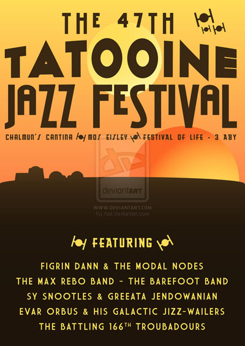

|

We are so happy you are considering a journey here to our special little piece of the heavens.
We were once just like you. Unsure if a trip to Tatooine would be worth the hyperspace jump it would take to get here,
or if we would be safe once we arrived. Once we got here, our only thought was, why didn’t we come sooner.
My husband was an engineer on a top secret, planet-sized Imperial boondoggle and was on track for a huge promotion,
but we never saw each other and were both miserable. On a whim, we arranged a trip to Tatooine to do some droid shopping
and to see the Jazz Festival, which happens on the 3rd klekket of every progression, and ended up falling in love with
the place. After staying two weeks, we flew back to Coruscant, but only to pack what we needed and to sell the rest.
We were back here in half a klekket, bought the land that we would eventually build the inn on, and have never been
happier.

|